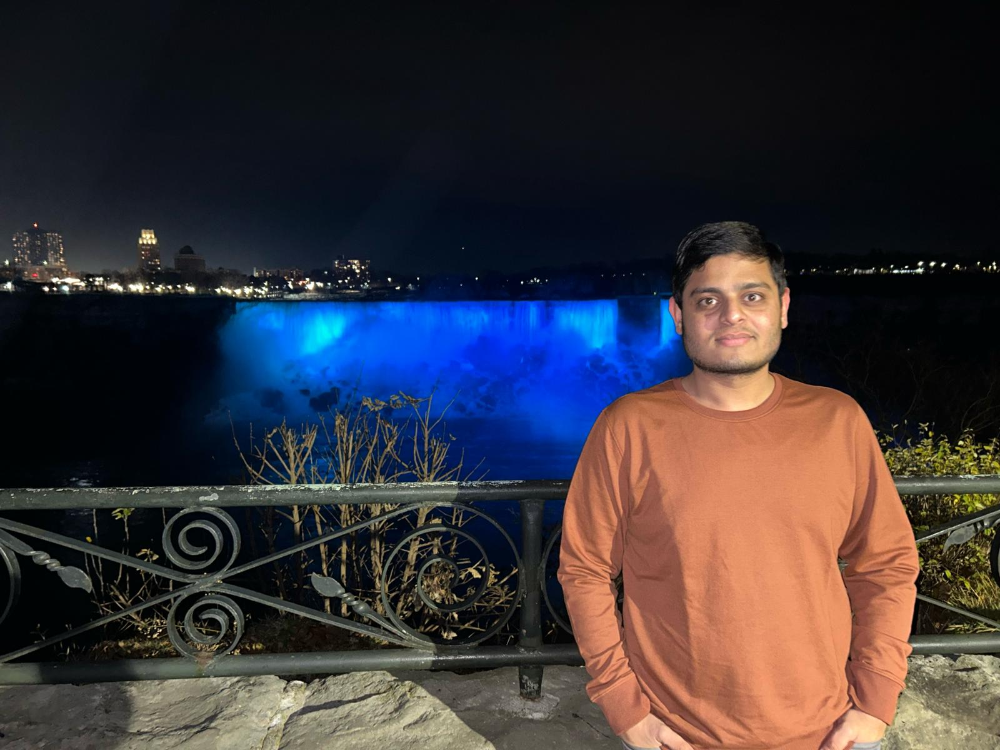

Dhaval Thakkar

Summary
Proficient in crafting responsive and user-friendly web interfaces
through strong knowledge of HTML, CSS, and JavaScript. Demonstrated
expertise in implementing effective viewport settings for optimal
cross-device compatibility.
Education
-
Post Graduate Diploma In Web Development,Conestoga College, Canada (Jan 2023-April 2024)
-
Bacholers Of Engineering Information & Technology,Gandhinagar Institute
of Technology(8.70 CGPA),Gandhinagar,India (Aug 2018-May 2022)
Work Experience
-
-
Write and maintain code for website features,
ensuring functionality and responsiveness.
- Collaborate with senior developers to implement
design specifications and enhance user experience.
-
-
Absorb knowledge from experienced team members and engage in continuous
learning of programming languages, development tools, and industry best practices.
-
Seek opportunities to enhance technical skills and understanding of
software development processes, leveraging the internship as a valuable
learning experience for future career growth.
Skills
-
Technical
-
HTML: ⭐⭐⭐⭐⭐
-
CSS: ⭐⭐⭐⭐⭐
-
JavaScript: ⭐⭐⭐
-
Reactjs: ⭐⭐⭐⭐
-
Nodejs:⭐⭐⭐
-
Soft
-
Communication:⭐⭐⭐⭐⭐
-
Collaboration/Teamwork:⭐⭐⭐⭐⭐
-
Time Management:⭐⭐⭐⭐⭐
-
Networking:⭐⭐⭐⭐
-
Problem Solving:⭐⭐⭐
Awards & Certifications
- Participated in various activities for 100 points of GTU.
(100 points)
Others
{kind=link}
{kind=link}
{kind=link}